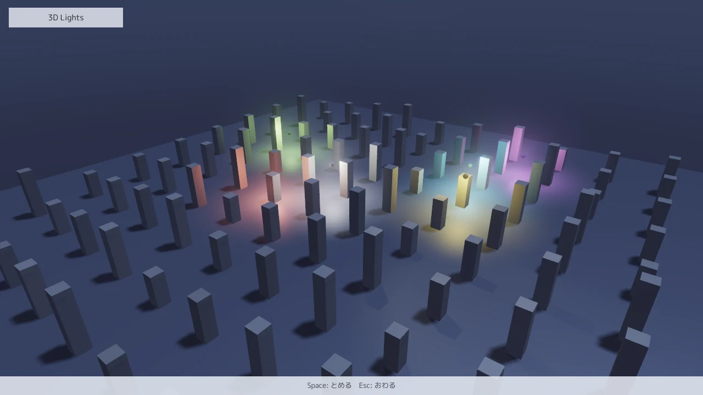

MitiruEngine
MitiruEngine
3D ACTION 4 / 6
灯りと空と音
点光源とスポットライトを置き、空、霧、アンチエイリアス、動きのぼけを決めます。後半は、効果音と曲を JSON で鳴らし分ける方法です。

lights3d。6 つの点光源が柱の間を回り、真上のスポットライトが柱の影を落としています。灯りのまわりがにじんで見えるのは、体積フォグと bloom を入れているためです。起動は mitiru_host.exe lights3d/lights3d.dll で、Space で灯りを止めます。全文はサンプル集にあります。サンプルのビルドの仕方と起動する場所は、1 ページ目の始め方にあります。
灯りを置く
pointLight3D は点光源を、spotLight3D はスポットライトを 1 つ足します。drawMesh と同じく draw の中で毎フレーム呼び、1 フレームに 1024 個まで受け付けます。そのうち画面に映るものを近い順に 256 個まで使い、影を落とせるのはスポットライトの 4 つまでです。
// 位置、届く距離 (m)、色、強さ
s.pointLight3D(p, 3.0f, hex(0xFF5A3C), 2.5f);
// 位置、向き、届く距離、内側と外側の角度、色、強さ、影を落とすか
s.spotLight3D({0.0f, 9.0f, 0.0f}, {sweep, -1.0f, 0.2f}, 14.0f, 10.0f, 18.0f, hex(0xFFF2D0), 6.0f, true);
サンプルの柱 100 本は、drawMeshInstanced で 1 回にまとめて描いています。柱ごとの位置と色むらを行列と色の配列にして、読み込みのときに 1 度だけ作ります。1 ページ目の跳んだ光の筋は drawTrail で、点の列を渡すと帯にして描きます。剣を振った跡にも使えます。
画面全体の設定をまとめる
影、霧、空、アンチエイリアス、動きのぼけといった画面全体の設定は、render::SceneLook にまとめて sceneLook3D に渡します。数値だけの構造体なので、ゲームの状態に入れておけば、場面ごとの見た目も巻き戻しで一緒に戻ります。
render::SceneLook look; look.shadow = true; // 平行光の影 look.sky.enabled = 1; // 物理ベースの空 look.sky.driveSunLight = 1; // 平行光の色を空の太陽の色に合わせる look.volumetricFog.enabled = 1; // 体積フォグ look.volumetricFog.density = 0.03f; look.bloom = true; // 明るい所をにじませる look.aaMode = 3; // 3 = TAA、1 = MSAA + FXAA、2 = MSAA だけ、0 = 起動時の設定に従う look.motionBlur = 0.5f; // 動きのぼけの強さ 0〜1。負なら起動時の設定に従う s.sceneLook3D(look);
このページを書くときに、action3d に上の設定を足して DX12 で撮り、空が地平線へ向かって明るくなることと、カメラが回ったときに背景がぼけることを確かめました。霧の濃さは density と、高さで薄くなる割合の heightFalloff で決めます。lights3d は地面に近いほど濃い霧にして、灯りのまわりだけを光らせています。
ほかに、輪郭線、トゥーンの段数、環境遮蔽 (SSAO と GTAO)、被写界深度、色調の補正も同じ構造体で決めます。プレイヤーが設定画面で選んだ画質は、ゲームが頼んだ効果の上限として掛かります。
当たりの跡と粒を出す
血や焦げ跡のように面に残る跡は decals3D、火花や土ぼこりの粒は particles3D、当たった瞬間の白飛びや放射状のぼけは hitFeel3D で描きます。どれもゲームが「いつ・どこで出したか」を状態に持ち、そこからの経過秒を毎フレーム渡します。エンジンは前のフレームを覚えないので、巻き戻すとその時刻の跡と粒がそのまま出ます。
const float age = (frame - landFrame) / 60.0f; // 着地からの経過秒
render::DecalDesc mark = render::decalOnSurface(landAt, {0, 1, 0}, 1.2f);
mark.age = age; mark.lifetime = 6.0f;
s.decals3D(&mark, 1); // 床の跡
render::ParticleEmitterDesc dust;
dust.key = 1; dust.seed = landFrame; dust.age = age; // seed は描画だけの乱数
dust.burst = 64; dust.blend = render::ParticleBlend::Alpha;
s.particles3D(&dust, 1); // 土ぼこり
同梱の action3d は、着地のたびに土ぼこりと跡を出し、高い所から落ちた時だけ hitFeel3D で画面を一瞬ぶらします。跡や粒の形を画像で決めるときは、vfxTexture3D("fx/blood.png") が返す番号を albedoLayer や textureLayer に書きます。
当たった瞬間に時間を止める
ヒットストップは hud.hitStop(秒) で頼みます。止まっている間も update は毎フレーム呼ばれ、ゲームの dt (in.dt()) だけが 0 になります。UI の層 (in.dt(Layer::Ui)) は止まらないので、メニューやゲージの動きは続きます。dt を掛けて動かす処理は何も書かずに止まります。フレームを数えて進める処理 (技のフレームデータなど) は、dt が 0 のフレームを自分で飛ばします。
if (hit) { hud.hitStop(0.08f); hud.shake(0.15f, 6.0f); }
if (dt == 0.0f) { return; } // フレームで数える処理はヒットストップの間は進めない
++attackFrame;
当てた側と当てられた側だけを止めて、ほかの敵や背景は動かし続けたいときは、アクションの部品の action::HitStop を人ごとに持たせます。tick の頭で consume() が true を返す間、その人の処理を飛ばします。画面全体を止めるなら hud.hitStop を使います。
別のカメラの絵を出す
小さな地図、分割画面、監視カメラのモニターのように、同じフレームに別のカメラの絵が要るときは副ビューを使います。view3D で番号 (0〜7) と大きさを決め、beginView3D と endView3D の間に描いた物がその番号の絵になります。絵は compositeView3D で画面の矩形に貼るか、drawMeshWithView3D で板に映すか、UI の <img src="view3d:0"/> で出します。
render::View3DPod map;
map.width = map.height = 256;
s.view3D(0, map); // 同じ作りなら作り直さない
if (s.beginView3D(0, hero + Vec3{0, 16, 0}, hero, {0, 0, -1}, 45.0f))
{
drawRoom(s); // 真上から見た部屋
s.endView3D();
}
beginView3D と endView3D の間に積んだ灯り、跡、粒、屋外の地形、エフェクトは、そのビューにだけ出ます。分割画面では、ビューごとに世界を描く関数を 1 回ずつ呼びます。bloom、FXAA、TAA、SSAO、空気遠近、体積フォグは主の画面の設定に合わせて掛かり、影はビューごとにそのカメラに合わせて焼くので、2 人が遠く離れてもどちらにも影が落ちます。全文はサンプル集の views3d と coop3d にあります。
効果音を鳴らし分ける
ゲームは hud.play("footstep") のように名前で鳴らします。assets/audio/footstep.wav を置けば、JSON を書かなくても鳴ります。曲は hud.music("field") で、同じように assets/audio/field.wav を鳴らします。鳴らし方を変えたくなったら、assets/audio/sounds.json に書きます。足音のように同じ音が続くものは、候補のファイルを並べておくと毎回 1 つ選ばれ、音量と高さに揺らぎが付きます。
{
"seed": 1234,
"sounds": {
"footstep": {"variants": ["sfx/step1", "sfx/step2", "sfx/step3"], "volumeDb": [-3, 0], "pitchSemitones": [-1, 1],
"maxInstances": 4, "steal": "oldest",
"attenuation": {"model": "inverse", "min": 1, "max": 30}},
"explosion": {"priority": 220, "occlusionDb": -18, "occlusionLowpassHz": 800}
}
}
3D の音は hud.play("hit").at(位置) で鳴らします。hud.listener(カメラの位置, 前, 上) から見て遠い音ほど小さく、左右にも振れます。揺らぎの乱数は seed と更新の回数から決まるので、録画を再生すると同じ足音が同じ高さで鳴ります。
曲を場面で切り替える
戦闘が始まったら次の小節で戦闘曲へ移る、といった切り替えは assets/audio/music.json に書きます。ゲームは hud.music("combat") で区間の名前を頼むだけで、エンジンが小節や拍の位置ちょうどで切り替えます。
{
"bpm": 120, "beatsPerBar": 4,
"layers": [ {"id": "drums", "curve": [[0, 0], [0.5, 1]], "fadeSec": 1.5, "sync": "bar"} ],
"segments": [
{"id": "explore", "bars": 8,
"stems": [{"file": "music/explore_pad"}, {"file": "music/explore_drums", "layer": "drums"}]},
{"id": "combat", "bars": 4, "bpm": 140, "stems": [{"file": "music/combat"}]}
],
"transitions": [ {"from": "*", "to": "combat", "sync": "bar", "fadeOutSec": 0.25} ],
"stingers": [ {"id": "finisher", "file": "music/finisher", "sync": "beat"} ]
}
敵の数に合わせて打楽器の層を足すときは、hud.musicIntensity(0.8f) で強さを渡します。層ごとの音量は JSON の curve で決まります。とどめの一撃に合わせて短いフレーズを重ねるときは hud.play("finisher") と書けば、次の拍に合わせて鳴ります。今の拍は in.music() で読めるので、拍に合わせて敵が攻めるといった作りもできます。
同梱サンプル music_layers は、この 2 つの JSON を使います。赤い影が近づくほど強さを上げて太鼓と低音の層を足し、Space で追い払うと sounds.json の風の音がすぐ鳴り、鐘のスティンガーが次の拍で重なります。全文はサンプル集にあります。
const float intensity = clamp01(1.0f - (dist - 90.0f) / 380.0f); // 影が近いほど強い
if (std::fabs(intensity - sent) > 0.01f) // host が覚えているので、変わった時だけ渡せばよい
{
hud.musicIntensity(intensity);
sent = intensity;
}
if (in.pressed(Key::Space))
{
hud.play("whoosh"); // sounds.json の効果音。すぐ鳴る
hud.play("chime"); // music.json のスティンガー。曲の次の拍に合わせて鳴る
}
WAV を鳴らすところから JSON を足すまでの順番と書式の全体は、リポジトリの AUDIO.md と ADAPTIVE_MUSIC.md にあります。
次のページでは、遊んだ途中をセーブし、物理の世界ごと巻き戻します。5. セーブと巻き戻し